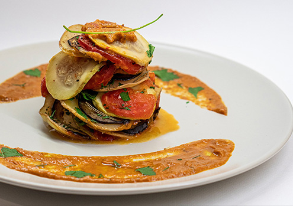

- 200g Rinderhackfleisch
- 1 Dose Pizzatomaten
- 1 Zwiebel
Ratatouille

Zutaten für 4 Personen
>4
1
2
1
Paprikaschote(n), rot, grün, gelb
Zucchini
Zwiebel(n)
Aubergine(n)
Tomate(n)
Salz und Pfeffer
Knoblauch
Thymian
Butterschmalz oder Olivenöl
Zubereitung
Der einzige Unterschied zu den unzähligen Rezepten besteht eigentlich nur darin, dass ich die einzelnen Zutaten immer getrennt brate und erst ganz zum Schluss mische. So sind die Bestandteile meiner Ratatouille für das Auge immer erkennbar und verschwinden nicht in der Tomatensoße. An Gemüse nehme ich, was der Markt eben hergibt. Immer dabei sind bunte Paprika, Zucchini, Zwiebeln und Auberginen. Die werden klitzeklein gewürfelt also so ungefähr Erbsengröße und immer schön separat in Butterschmalz gebraten. Olivenöl ist natürlich auch nicht falsch. Und die Tomaten? Richtig, die werden überbrüht, enthäutet entkernt und dann in kleinen Stücken dem Ratatouille ganz zum Schluss zugemischt. Gewürzt wird mit Salz, Pfeffer, Knoblauch, Thymian und was einem sonst noch einfällt. Jetzt wird das Ganze nochmals aufgewärmt. Das Gemüse hat noch Biss. Aber den kann man ja mit der Aufwärmzeit noch korrigieren.